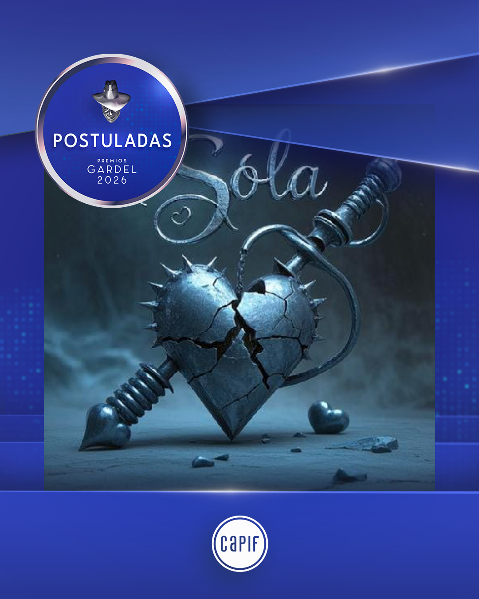

POSTULACIONES


Rap crudo · Identidad · Calle
Lucale (Cristian Alexander Devincenzi Lemos) es un rapero, compositor y gestor cultural nacido en Montevideo y criado en el conurbano bonaerense. Su identidad se construye desde la experiencia real de los barrios populares, fusionando rap con elementos del tango moderno en un sonido crudo y auténtico.
Criado en contextos vulnerables de San Isidro y Don Torcuato, territorio que hoy representa su base cultural, su historia está marcada por la resiliencia y la narrativa directa que refleja la realidad de la calle.
Con más de 50 canciones publicadas, Lucale se posiciona como un referente independiente en crecimiento, llevando el rap de barrio a un estándar global sin perder la esencia.

Canciones publicadas
"5000 Disparos"
Haciendo Rap Juntxs
Postulacion a Premios 2025/26
Premios MIN 2026